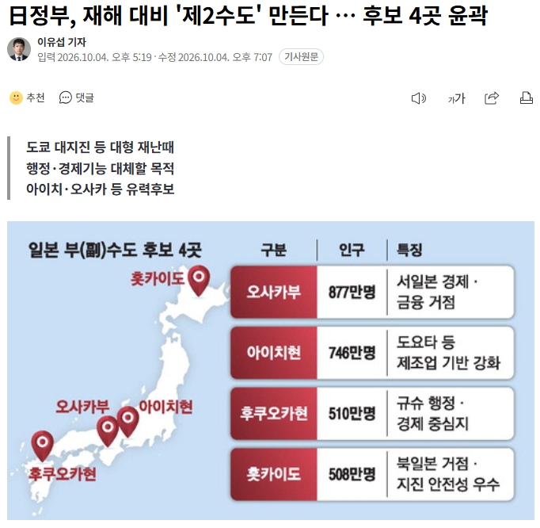

日정부, 재해 대비 '제2수도' 만든다 … 후보 4곳 윤곽
댓글
앨버커키가 유력하다고 함
무조건 왼쪽으로 꺾어야하는곳
지하에 터미널도그마 벌써 다 만든거냐
한국에서 세종시도 결국 그렇게 망했는데 저기 일본내에서도 의견분분할려나 ?
전혀 망하지 않은거 같은데? 서울 잿더미되면 세종으로 멀티 틀기에 부족함이 없어보임.
세종시 2차선 도로를 안 봐서 이런 말을 할 수 있는거다!!!!!!!!!!
우린 수도이전 실패
재들은 재난시 수도역할해줄 보조도시
세종보다 한참 못해도 목적에 부합함
훗카이도되면 러시아공군들 바빠지겠네
가나가와현에 만들고 이름은 ‘제3신동경시‘
후보 5번이 서울은 아니지?
80년 전에는 ㄹㅇ이었지 아마?
그거 용인쪽일껄?
걍 평소처럼 정치인들끼리 세금잔치 엔딩날거 같은데 ㅋㅋㅋㅋ
후보 보니깐 대놓고 오사카로 가겠다는거잖아 ㅋㅋㅋ
이제와서 후쿠오카 아이치가 될 리가
그렇게 몇 년동안 오사카 부수도하겠다고 난리쳤는데
훗카이도로 하지
저긴 애초에 오사카 내정해놓고 쇼하는거잖아 ㅋㅋ
서울
안된다 이 노오오옴!
어허 경성
일본에서도 이거보고 에반게리온 드립치겠지
서울공화국 VS 대판민국 레쓰고
세컨드 임팩드 대비인가?
경성을 제 2수도로 하자 일제 때도 나왔던 논의잖아 이거
한일 연방 ㄱ
이거 정치 엮인 정책이라 오사카 거의 확정이라매